<DOCTYPE html>
  <html>

  <head>
    <title>OAuth入門</title>
    <meta charset="utf-8">
    <link href="https://fonts.googleapis.com/css?family=M+PLUS+1p" rel="stylesheet">
    <style>
      body {
        font-family: "M PLUS 1p";
      }

      h1,
      h2,
      h3 {
        text-align: center;
        /* font-weight: 700; */
      }

      .remark-slide-content h1 {
        font-size: 3em;
      }

      .remark-slide-content h2 {
        font-size: 2em;
        color: #4dbfd2;
        text-align: left;
        border-bottom: solid thin #231815;
      }

      .remark-slide-content h3 {
        font-size: 1.4em;
      }

      .footnote {
        position: absolute;
        bottom: 1em;
      }

      /* リンク */
      a,
      a>code,
      p a {
        color: #ff1a75;
        text-decoration: none;
        font-size: 100%;
      }

      /* コード */
      code {
        font-family: 'Ubuntu Mono';
        border-radius: 5px;
        -web-border-radius: 5px;
        font-size: 90%
      }

      .remark-code,
      .remark-inline-code {
        font-size: 85%;
        color: #660000;
        font-family: Consolas, 'Liberation Mono', Menlo, Courier, monospace;
        background-color: #eeeeee;
      }

      .remark-code-line-highlighted {
        background-color: #eeeeee;
      }

      .pull-left {
        float: left;
        width: 47%;
      }

      .pull-right {
        float: right;
        width: 47%;
      }

      .pull-right~p {
        clear: both;
      }

      /* タイトルページ */
      .inverse {
        background: #006cb4;
        color: #CCC;
      }

      .inverse h1,
      .inverse h2 {
        color: #f3f3f3;
        line-height: 1em;
      }

      /* 左右二段表示 */
      .left-column {
        width: 48%;
        float: left;
      }

      .right-column {
        width: 48%;
        float: right;
      }

      p,
      li {
        font-size: 150%;
      }

      /* リスト内のリストは文字を小さく */
      ul li ul li,
      ol li ul li {
        font-size: 90%;
      }

      table {
        border: 1px solid #ddd;
        width: 100%;
        text-align: left;
      }

      table td,
      table th {
        padding: 15px 15px;
      }

      table thead tr {
        background-color: #4dbfd2;
      }

      table thead tr th {
        color: #fff;
        text-align: center;
      }

      table tfoot {
        border-top: 1px solid #ddd;
      }

      table tbody tr th {
        font-weight: bold;
      }

      table tbody tr:nth-of-type(2n) {
        background: #f5f5f5;
      }

      blockquote {
        background-color: #EFEFEF;
        text-align: left;
      }

      .black {
        color: black
      }

    </style>
  </head>

  <body>
    <textarea id="source">
class: center, middle
# OAuth入門

ボクとOAuthと、時々OpenID Connect

---
class: middle

## 対象者

エンジニア  
OAuthを知らない人／名前は聞いたことある人


---
class: middle

## ゴール

「OAuth完全に理解した」


???

詳細に話すと時間が足りないので、
「何のためのものなのか」をざっくりと理解してもらうことが目的です


---
class: middle

## アジェンダ

* OAuthとは
  * OAuthとは何なのか
  * 認可と認証
* OAuthの流れ
* まとめ
* OpenID Connectとの違い

???

OpenIDについては時間があれば話す予定。

---
class: middle

## OAuthとは


???

ではまず、OAuthとは何かについて。  
とりあえず、この「何か」が分かっていれば今日は大丈夫。


---
class: middle, center

What's OAuth ?

---
class: middle

OAuthは [RFC6749](https://openid-foundation-japan.github.io/rfc6749.ja.html) で標準化されている。

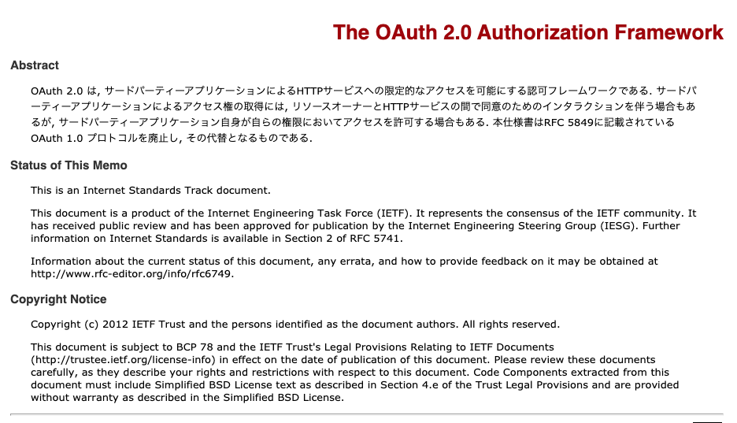

???

頭の部分に「OAuthとは？」の説明が書かれているので、抜き出してみる。

---
class: middle

> OAuth 2.0 は, サードパーティーアプリケーションによる
> HTTPサービスへの限定的なアクセスを可能にする認可フレームワークである.

???

ここでいう「フレームワーク」はSpringやLaravelのようなWEBフレームワークではなく、
「手順」や「決まりごと」を指します。

---
class: middle, center

# 🤔

???

うん、分からん。  
これだけ聞いても何のイメージもわかない。  
「へー、そうなんだ」ぐらいの感想。  

他に簡潔で良い説明がないものか...
Qiitaにありました

---
class: middle

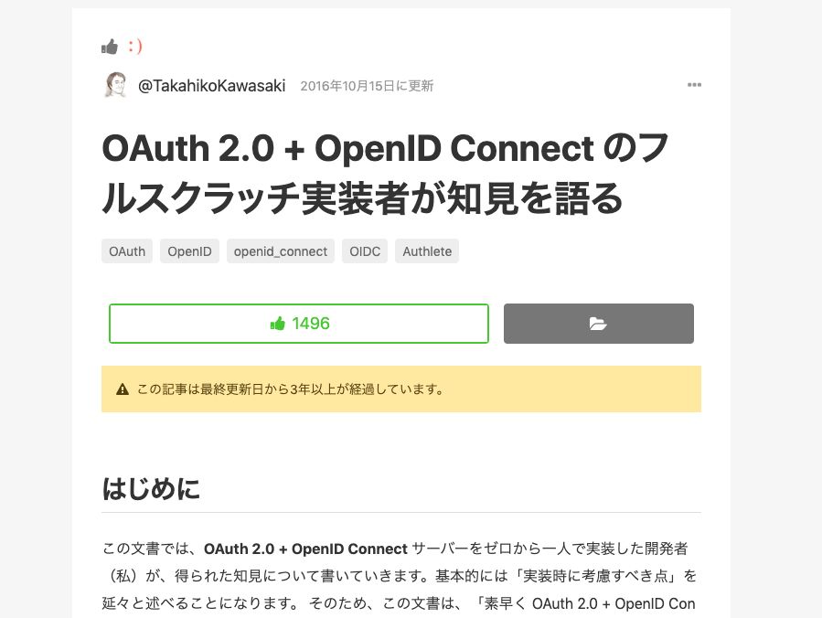

---
class: middle

> サービスのユーザーが、サービス上にホストされている自分のデータへのアクセスを、
> 自分のクレデンシャルズ (ID & パスワード) を渡すことなく、
> 第三者のアプリケーションに許可するためのフレームワークである。  

<small style="font-size: 0.7em">
  [OAuth 2.0 + OpenID Connect のフルスクラッチ実装者が知見を語る](https://qiita.com/TakahikoKawasaki/items/f2a0d25a4f05790b3baa#%E3%81%9D%E3%82%82%E3%81%9D%E3%82%82-oauth-%E3%81%AF%E5%BF%85%E8%A6%81%E3%81%AA%E3%81%AE%E3%81%8B)より
</small>


???

さっきよりかは分かりやすいと思います。

RFCの説明には触れられていないが、とても大事なことが書かれています。

どれか分かりますか？

---
class: middle

> <span style="color:gray">サービスのユーザーが、サービス上にホストされている自分のデータへのアクセスを、</span>
> 自分のクレデンシャルズ (ID & パスワード) を渡すことなく、
> <span style="color:gray">第三者のアプリケーションに許可するためのフレームワークである。</span>

<small style="font-size: 0.7em">
  [OAuth 2.0 + OpenID Connect のフルスクラッチ実装者が知見を語る](https://qiita.com/TakahikoKawasaki/items/f2a0d25a4f05790b3baa#%E3%81%9D%E3%82%82%E3%81%9D%E3%82%82-oauth-%E3%81%AF%E5%BF%85%E8%A6%81%E3%81%AA%E3%81%AE%E3%81%8B)より
</small>


???

「自分のクレデンシャルを渡さない」

これがOAuthでは大事。  
どうやってアクセスを許可するのか。については、後ほど解説。


---
class: middle, center

**認可** と **認証**

???

少し話は逸れて、認可と認証について話します。

「何で？」と思うかもしれませんが、OAuthにおいては大切な要素。

認可と認証の違い、ちゃんと把握してますか？

---
class: middle

**認可**

　権限を与えること。

**認証**

　対象が何か・誰かを検証すること。

???

認可と認証の違いは理解しましたか？

ここで先ほどの「OAuthとは何か」の説明に戻ってみましょう。

---
class: middle

> <span style="color: gray">サービスのユーザーが、サービス上にホストされている</span>自分のデータへのアクセスを、
> <span style="color: gray">自分のクレデンシャルズ (ID & パスワード) を渡すことなく、
> 第三者のアプリケーションに</span>許可するためのフレームワーク<span style="color: gray">である。</span>

<small style="font-size: 0.7em">
  [OAuth 2.0 + OpenID Connect のフルスクラッチ実装者が知見を語る](https://qiita.com/TakahikoKawasaki/items/f2a0d25a4f05790b3baa#%E3%81%9D%E3%82%82%E3%81%9D%E3%82%82-oauth-%E3%81%AF%E5%BF%85%E8%A6%81%E3%81%AA%E3%81%AE%E3%81%8B)より
</small>

???

そう

---
class: middle, center

OAuthは認可のフレームワーク

???

OAuthは認可のフレームワークなのです。

何で認可と認証の話をしたかというと、
OAuthを「認証のフレームワーク」だと勘違いしている人がいるからです。  

なぜか


---
class: middle

* OAuthを使って 認証 することができるため
  * OAuth認証と呼ばれるもの
* アクセス許可要求時、ユーザ認証を求められるから。

<center>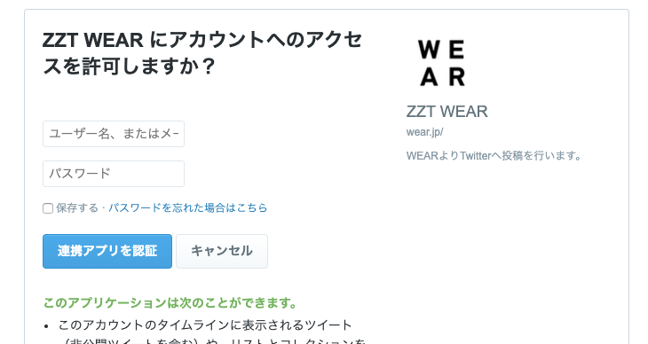</center>

???

OAuthの仕様では認証については関与していない。

あくまでも「認可のフレームワーク」であることを忘れないように。

ちなみに、単なるOAuthを認証に利用すると「車が通れるほどの、どデカイセキュリティホールができる」らしいです。  


一通り「OAuth」については説明しましたが、今はこう思っているはず。

---
class: middle

「認可のフレームワーク」なのは分かった。  
では、具体的な仕様を4行で教えてくれ。

???

これまでは概念的な話が主だったので、
結局どうやって認可を実現するのかを話していない。

4行でOAuthの仕様説明をするなら、こう。

めっちゃ簡単です。

---
class: middle

リソースへのアクセスはアクセストークンを用いる。
アクセストークンは、リソースオーナーがクライアントに対して、要求された権限の委譲に許可した場合に認可サーバーが発行する。


---
class: middle, center

ね？簡単でしょう？

???

まぁ、そんなことはないんですけど。

もう一度見てみましょう。

次は大切な単語をピックアップしています。

---
class: middle

<span style="color: gray">
<span class="black">リソース</span>へのアクセスは<span class="black">アクセストークン</span>を用いる。
アクセストークンは、<span class="black">ソースオーナー</span>が<span class="black">クライアント</span>に対して、要求された権限の委譲に許可した場合に<span class="black">認可サーバー</span>が発行する。
</span>

???

新たに単語が5つ登場しました。

リソース、アクセストークン、リソースオーナー、クライアント、認可サーバー

これらを、OAuthの流れと共に説明していきます。

最後にはこの文章が理解できているはずです！

---
class: middle

## OAuthの流れ

???
 
実際にどういうフローで、アクセストークンが発行されるかをみていく。  

HTTPでやりとりしていくが、今回はどのようなリクエスト・レスポンスでやりとりしているかは明言しません。

今回は「流れ」を理解してもらうことを目的としているため。

---
class: middle

## OAuthの登場人物

* リソース(リソースサーバー)
* リソースオーナー
* アクセストークン
* クライアント
* 認可サーバー
* 認可コード

???

先ほどは登場していなかった「認可コード」というものが増えていますが、今は気にしないでください。

ちゃんと説明します。

---
class: middle

## リソース(リソースサーバー)

資源（リソース）。  
例えばGoogleDrive内のドキュメントや画像、Twitterのツイート情報など。  
リソースサーバーはリソースを提供するサーバー。

リソースの形式は問わない。

---
class: middle

## リソースオーナー

リソースを所有する人。  
GoogleアカウントやTwitterアカウントの所有者がリソースオーナーにあたる。


---
class: middle

## アクセストークン

リソースへアクセスする際に必要な、有効期限付きの通行手形。

クライアント(第3者)がリソースへアクセスすることを、リソースオーナーが許可した場合に発行される。

---
class: middle

## クライアント

リソースにアクセスしたい第3者（プログラム）。

質問箱とか。


---
class: middle

## 認可サーバー

アクセストークンを発行するサーバー。

クライアントの識別、リソースオーナーへの認可要求などを行う。

---
class: middle

## 認可コード

アクセストークンを発行するための引換券。  

リソースオーナーがリソースへのアクセスを許可した場合に、認可サーバーが発行する。  

---
class: middle

## アクセストークンが発行されるまで

---
class: middle

今回は、自分のツイートを取得する「ツイート取得アプリ」を題材にします。

| 登場人物 | 誰にあたるか |
|-|-|
|リソースオーナー|Twitterアカウント所有者|
|リソース|ツイート|
|クライアント|ツイート取得アプリ|
|認可サーバー|Twitter|

---
class: middle, center

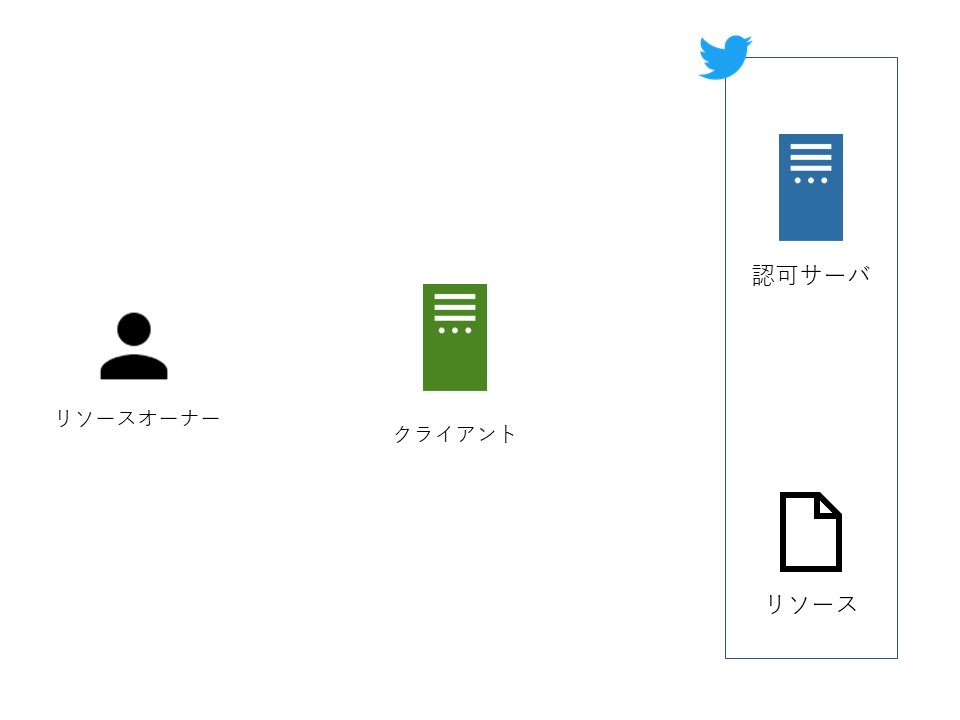

???

今回はこんな構図。

---
class: middle, center

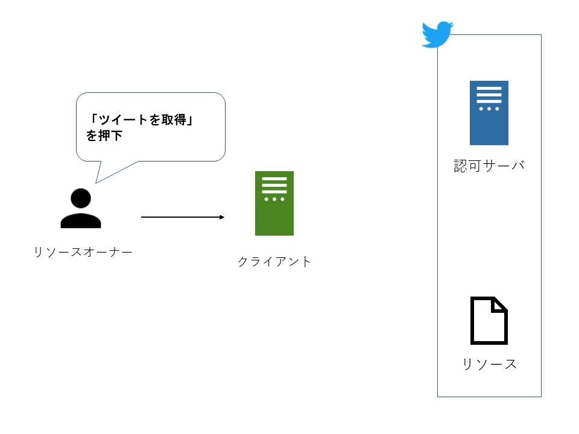

???

「ツイート取得アプリ」

---
class: middle, center

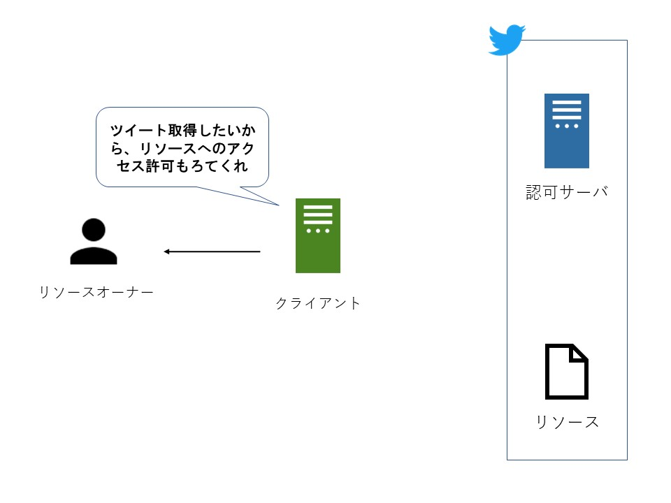

---
class: middle, center

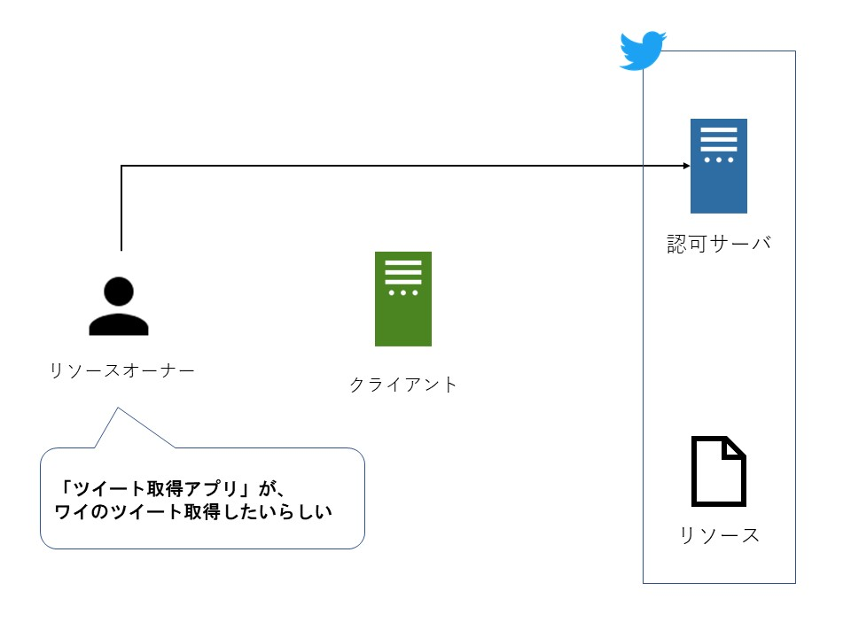

---
class: middle, center

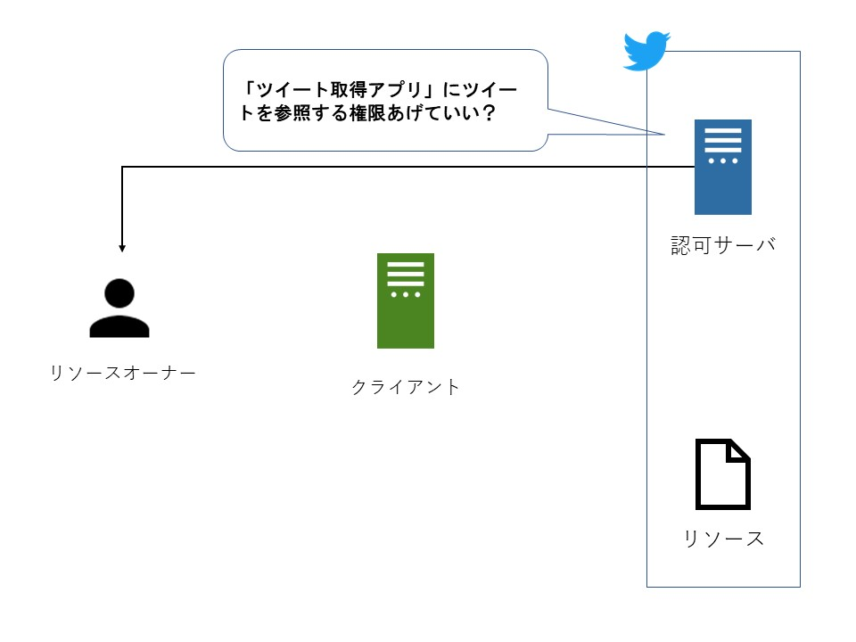

---
class: middle, center

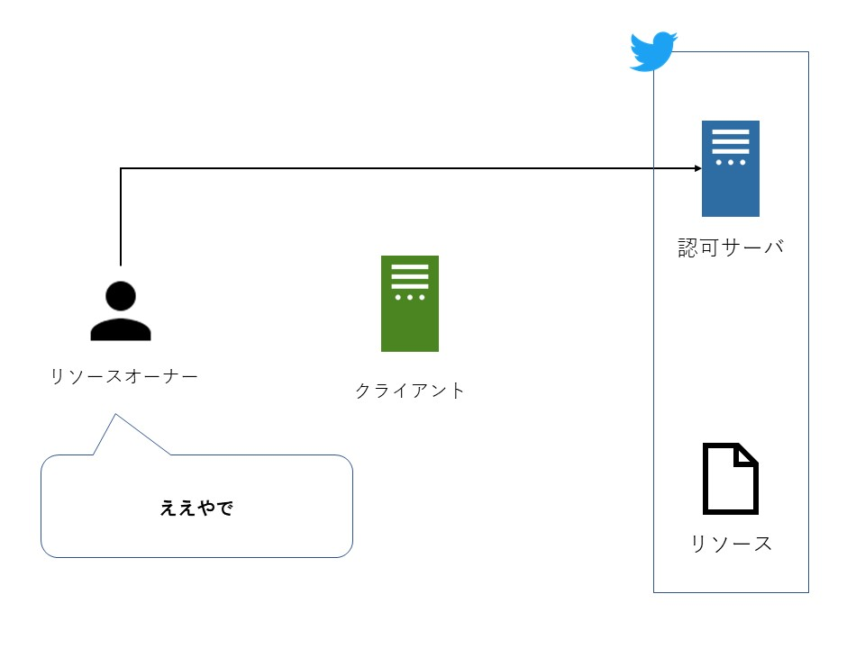

---
class: middle, center

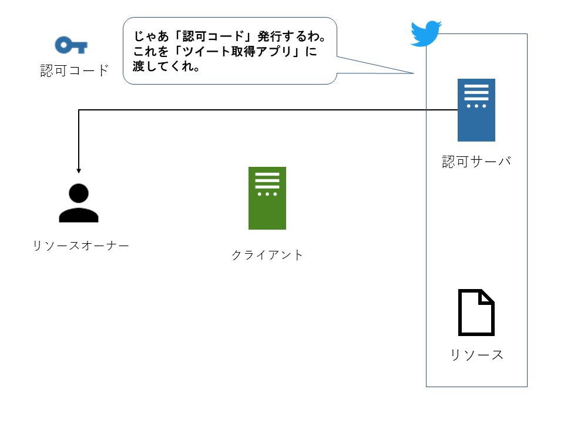

---
class: middle, center

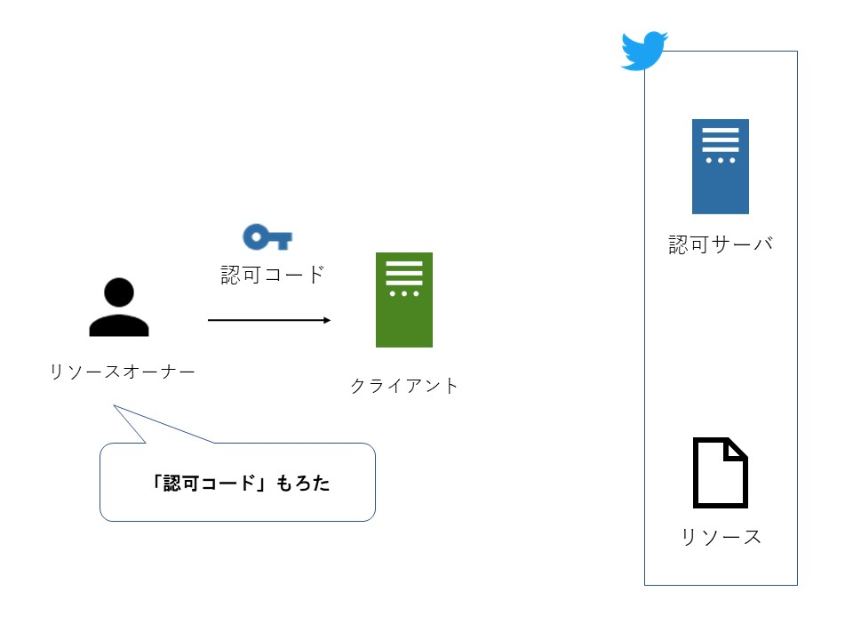

---
class: middle, center

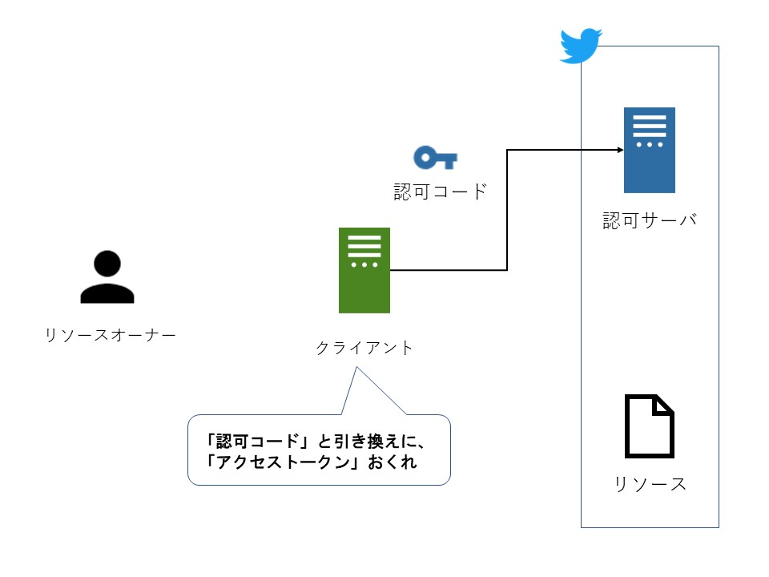

---
class: middle, center

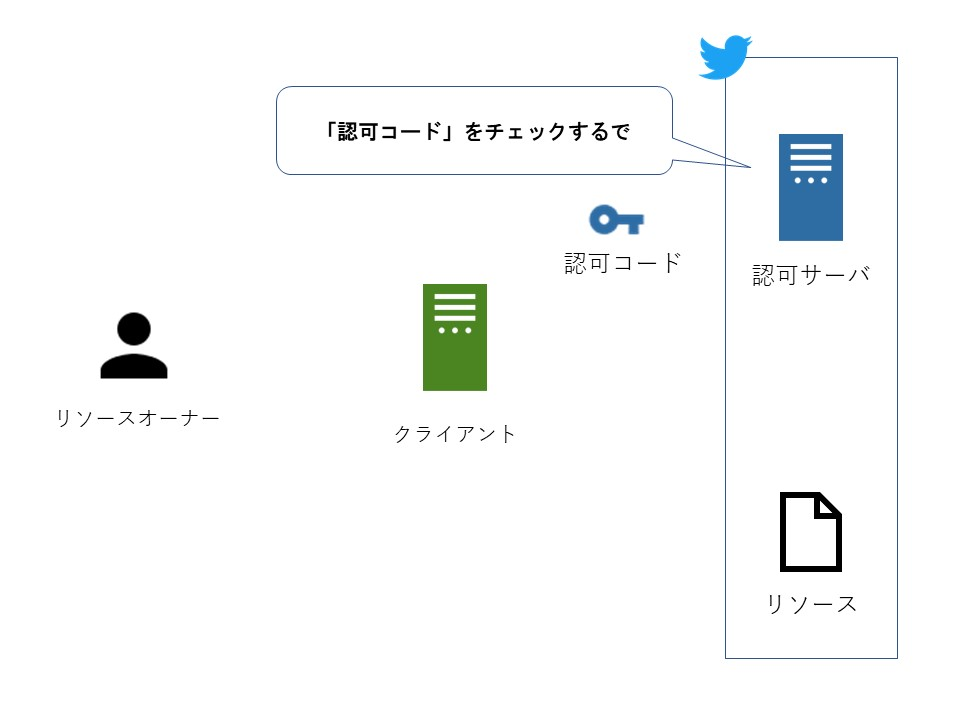

---
class: middle, center

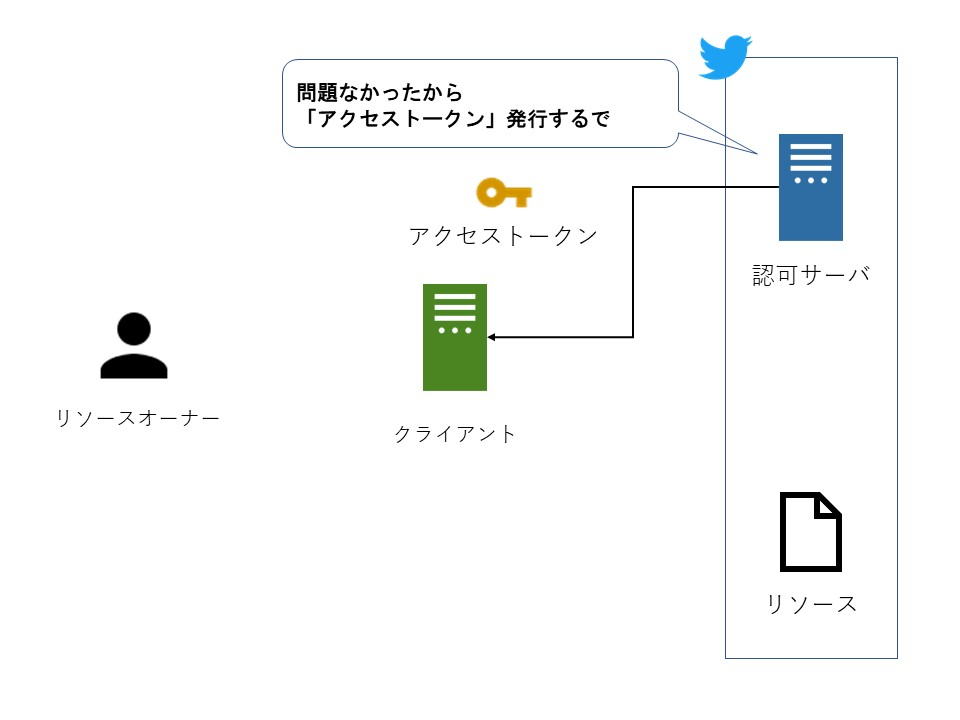

???

アクセストークンの発行はここまで。

ここからはアクセストークンを使って、リソースへアクセスする。

---
class: middle, center

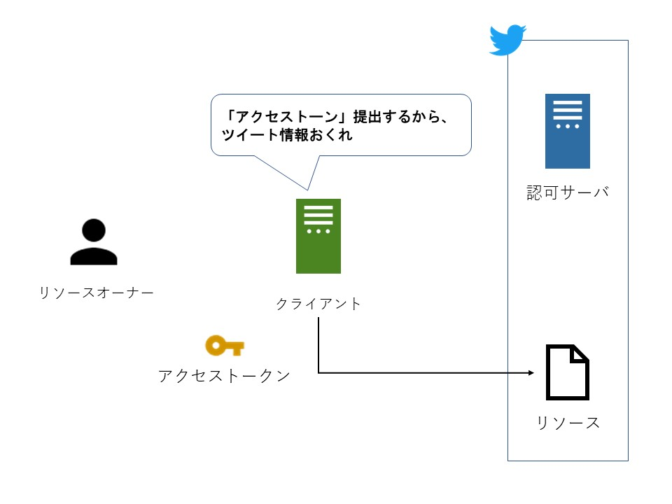

---
class: middle, center

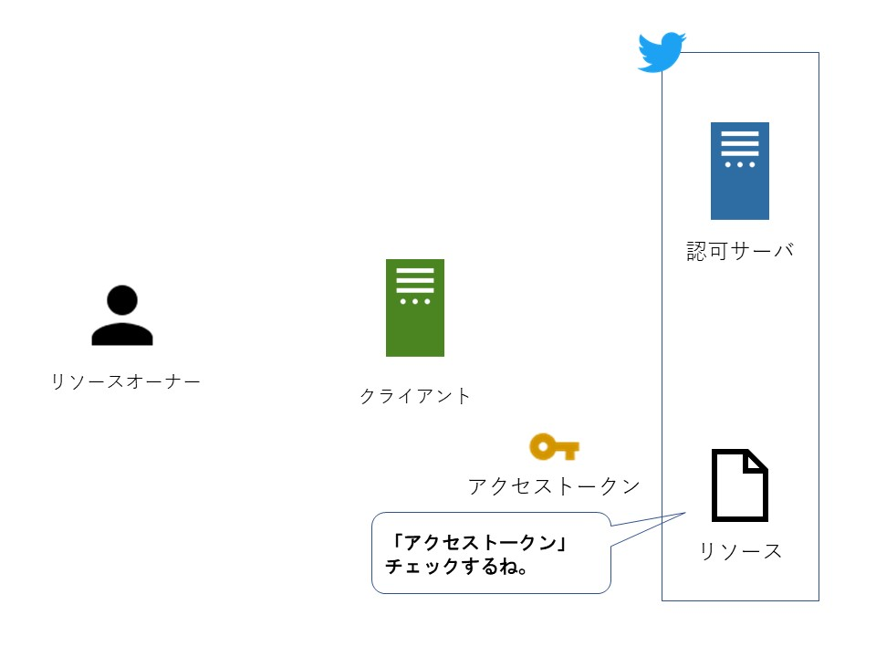

---
class: middle, center

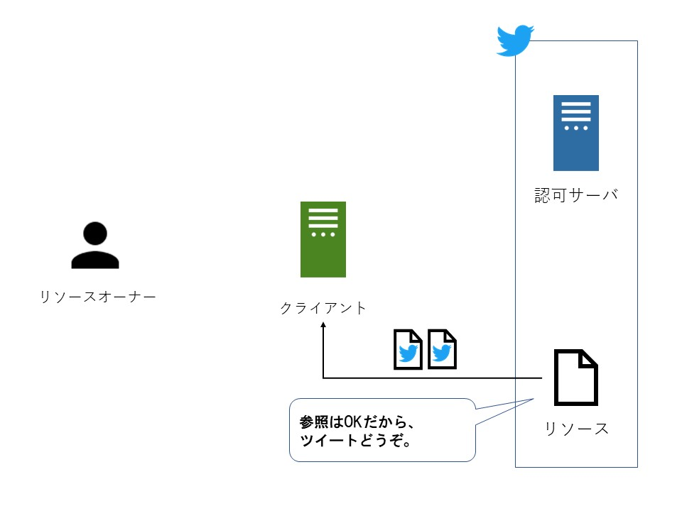

???

以上が、OAuthの流れになります。

---
class: middle

どうですか？  
なんとなく、流れが分かりましたか？

???

流れをみてきたので、、、

---
class: middle

リソースへのアクセスはアクセストークンを用いる。
アクセストークンは、リソースオーナーがクライアントに対して、要求された権限の委譲に許可した場合に認可サーバーが発行する。

???

この文章、わかりますよね？

---
class: middle

今回紹介したのは「認可コードフロー」と呼ばれる、アクセストークン発行手順の1種です。  

---
class: middle

## アクセストークン発行フロー一覧

* 認可コードフロー
  * 認可コードフロー + PKCE
* インプリシットフロー
* リソースオーナー・パスワード・クレデンシャルズフロー
* クライアント・クレデンシャルズフロー
* リフレッシュトークンフロー


???

PKCE（ピクシー）は仕様拡張。

興味がある人は調べてみてください。

---
class: middle

## まとめ

* OAuthは認可のフレームワーク
* ID・PWを渡さずに、リソースへのアクセスを許可するための仕組み
* リソースへのアクセスはアクセストークンを用いる
* アクセストークンは権限委譲を許可した証

---
class: middle, center

OAuth完全に理解しました？

---
class: middle

## 参考

* [The OAuth 2.0 Authorization Framework](https://openid-foundation-japan.github.io/rfc6749.ja.html)
* [【電子版】雰囲気でOAuth2.0を使っているエンジニアがOAuth2.0を整理して、手を動かしながら学べる本 - Booth](https://booth.pm/ja/items/1296585)
* [一番分かりやすい OAuth の説明 - Qiita](https://qiita.com/TakahikoKawasaki/items/e37caf50776e00e733be)
* [OAuth 2.0 全フローの図解と動画 - Qiita](https://qiita.com/TakahikoKawasaki/items/200951e5b5929f840a1f)
* [単なる OAuth 2.0 を認証に使うと、車が通れるほどのどでかいセキュリティー・ホールができる](https://www.sakimura.org/2012/02/1487/)

---
class: middle

## OpenID Connectとの違い

---
class: middle

OAuthが「認可のフレームワーク」であるのに対し、
OpenID Connect は「認証のフレームワーク」

---
class: middle

OAuthでは「アクセストークン」が発行されるが、
OpenID Connect では「IDトークン」という認証情報が発行される。

---
class: middle

OpenID Connectで「IDトークン」が発行される手順の種類は以下の通り。

* 認可コードフロー
* インプリシットフロー
* ハイブリッドフロー

???

見たことありませんか？

それもそのはず

---
class: middle

OpenID ConnectはOAuthの拡張仕様

???

OAuthのフローを流用して、

* IDトークンの発行
* IDトークンの仕様

を定めたものがOIDC

---
class: middle

気になった人は調べてみてください。

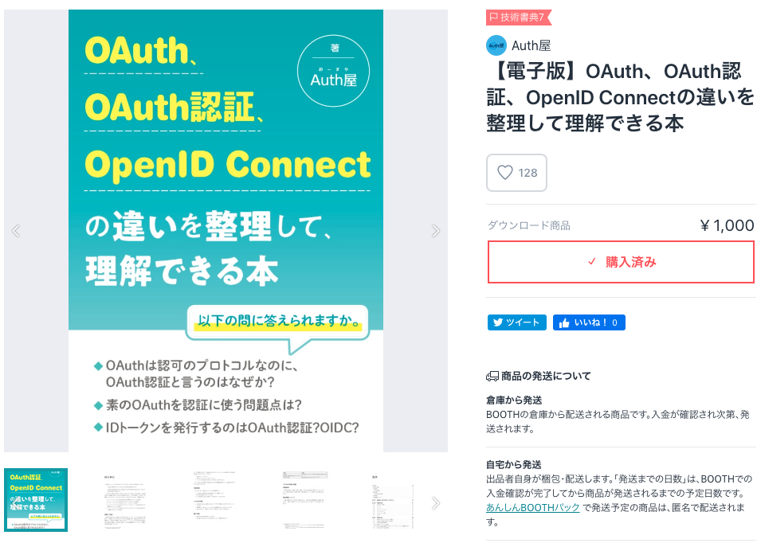

[【電子版】OAuth、OAuth認証、OpenID Connectの違いを整理して理解できる本](https://booth.pm/ja/items/1550861)


    </textarea>
    <script src="https://remarkjs.com/downloads/remark-latest.min.js" type="text/javascript"></script>
    <script type="text/javascript">
      var slideshow = remark.create({
        ratio: '4:3'
      });
    </script>
  </body>

  </html>
